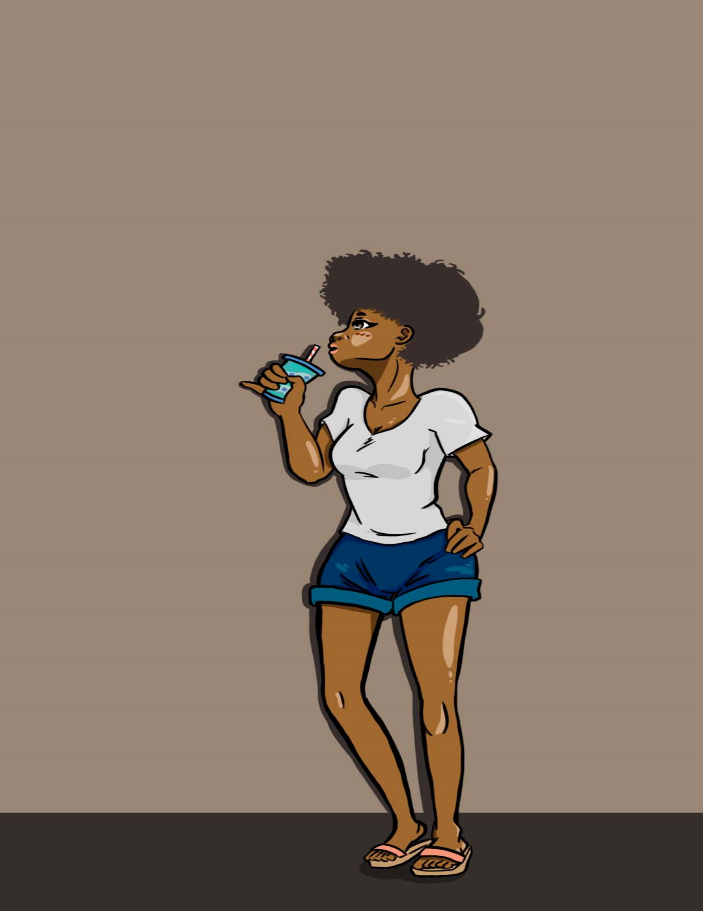
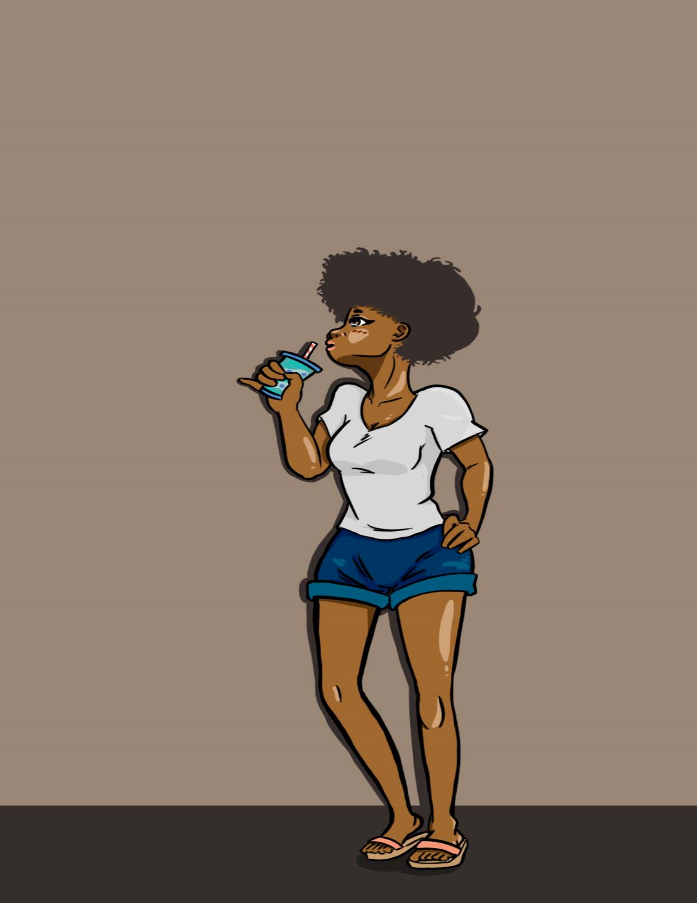

"Celestial Sea" This was done in Adobe Illustrator, and was a assignment to get use to different digital softwares for illustrating.
"Looming Giant" This was part of an assignment in college, where I had to make a piece based on traditional artist. Mine inspiration was a comic book artist.
"Morning Dew" This was part of a project where we were suppose to associate a illustration to lyrics to a song. The song chosen was "Just the Two of Us" by Bill withers and Grover Washington Jr.
"Causal" This was a personal project, in which I was studying casual attire on a human form.
 
